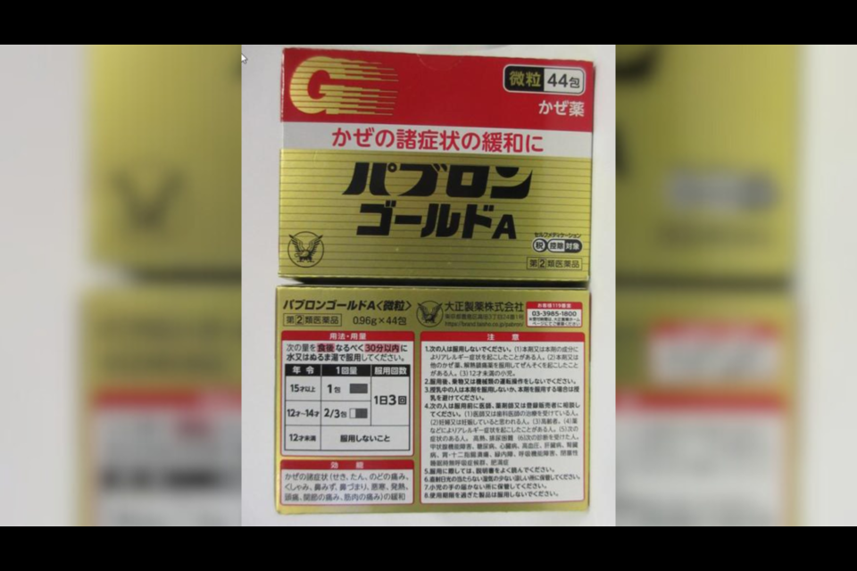

Tokyo Beauty's Westminster Highway store was raided by Health Canada last year.
Health Canada has seized more products from Tokyo Beauty and Health, this time from its Aberdeen Centre location.
According to an update issued on Friday, Health Canada seized five skin treatment products and cold medicine labelled to contain prescription, controlled or over-the-counter drugs.
The seized cold medicine, called Pabron Gold A Granules Cold Medication, contains an opioid.
The store address is Unit 3660-4151 Hazelbridge Way.
The federal department warns the products may pose serious health risks.
The warning came after unauthorized health products were seized from Tokyo Beauty's other location at 120-8191 Westminster Highway in September 2023.
A raid by Health Canada revealed products including another cold medication that contained an opioid.
The business licence for the Westminster Highway location was later suspended for 90 days by Richmond city council.
Got an opinion on this story or any others in Richmond? Send us a letter or email your thoughts or story tips to Editor@Richmond-News.com.